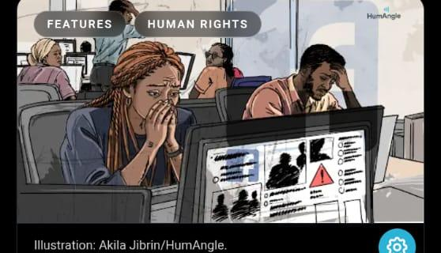

Silicon Valley’s African Trauma Factory: How Big Tech Outsources Psychological Horror to Africans
Two Nigerian graduates went to Nairobi expecting Hausa translation and customer care roles. Instead, they signed NDAs, were handed 50-second timers, and were forced to moderate raw terror footage for Meta. Now, a landmark Kenyan court battle is cracking open the digital colonialism powering modern social media.

1. The Core Premise & The Paradox
Silicon Valley promotes a frictionless, sanitized vision of the digital future. Trillion-dollar corporations like Meta (Facebook, Instagram) and OpenAI boast of machine learning algorithms that instantly detect hate speech and keep digital public squares safe.
The reality is far darker: Artificial intelligence cannot reliably distinguish hate speech, cultural context, or regional nuances. To keep billions of social media feeds clean, Big Tech operates an invisible, low-cost supply chain across the Global South. In air-conditioned offices in Nairobi, Kenya, hundreds of young African university graduates are paid roughly $1.50 an hour to act as biological filters—manually viewing, tagging, and scrubbing beheadings, rape, torture, and child abuse so Western users don’t have to.
“We are the shock absorbers of the internet. They break our minds so their platforms look respectable to advertisers.”
— Former African Content Moderator, Nairobi
2. The Human Faces: Kauna Malgwi & Mustafa Mukhtar
An October 2026 investigation by Nigerian investigative outlet HumAngle brought into sharp focus the stories of Nigerian professionals recruited into this trauma machine:
Kauna grew up in Borno State, Northeast Nigeria, witnessing firsthand the destruction caused by the Boko Haram insurgency. Hoping to pursue her Master’s degree in Kenya, she applied for what recruiter Sama advertised as a benign “Hausa language translator” role in 2019.
Upon arrival in Nairobi, after signing a 20-page Non-Disclosure Agreement (NDA), she was brought onto the production floor. Her screen was filled with raw, unedited footage of Boko Haram executions, roadside massacres, and terrorist propaganda from her own home state. She was forced to relive the very terrorism she fled, reviewing atrocities every day under stopwatch surveillance.
Today, Malgwi has channeled her trauma into activism, founding the Digital Rights and Mental Health Initiative Africa (DRMHI) and co-leading the African Content Moderators Union.
Recruited alongside Malgwi, Mukhtar was also promised a reputable customer support and linguistic desk job. Instead, he was assigned to high-priority violence queues.
Mukhtar provided one of the most chilling testimonies of the entire investigation: when workers sought help from the company’s mandatory in-house "wellness counselors", the counselors themselves broke down in tears upon hearing what the moderators had been exposed to. The support system was completely overwhelmed and useless.
3. The 50-Second Death Clock & Working Conditions
The working conditions inside the Nairobi hub were governed by strict, unforgiving algorithms:
Moderators were forced to make high-stakes policy calls on horrifying content within 50 seconds per post. This included reading captions, evaluating regional slang, identifying terror symbols, and deciding whether to delete or escalate. If an agent took longer, their efficiency metric dropped, risking disciplinary action.
Every pause, click, and keystroke was tracked. To keep their jobs, moderators had to maintain a 95% accuracy score according to Meta's opaque community standards. A wrong decision on whether a video depicted "glorification of terror" vs. "journalistic reporting" meant docked pay or probation.
In the United States and Europe, content moderators earn $18 to $25 per hour with access to clinical psychiatric care. In Nairobi, Sama paid African moderators between 40,000 to 60,000 KSh per month (~$300 - $450 USD)—translating to about $1.50 per hour. Meta generated over $130 billion in annual revenue while paying its frontline human defense the equivalent of pocket change.
4. Connected Scandals: OpenAI & The Ethiopia Civil War
This is not an isolated problem confined to Facebook. The exact same infrastructure was leveraged across other Silicon Valley flagship projects:
In late 2021, before ChatGPT’s global explosion, OpenAI contracted Sama in Nairobi to build the safety classifier that prevents ChatGPT from spitting out hate speech or violent text.
Kenyan workers were paid $1.32 to $2.00 per hour to read hundreds of thousands of passages scraped from the darkest corners of the web—explicit descriptions of sexual violence, pedophilia, bestiality, suicide, and torture. Workers reported recurring nightmares and severe mental distress. Sama canceled the contract early because the work was deemed too hazardous to human health.
During the catastrophic civil war in Ethiopia (2020–2022), Facebook was flooded with virulent ethnic incitement. Meta had assigned fewer than 30 content moderators in Nairobi to cover more than 100 million citizens across Ethiopia speaking Amharic, Oromo, and Tigrinya.
In November 2021, Professor Meareg Amare, an internationally respected chemistry professor at Bahir Dar University, was targeted with viral Facebook posts falsely accusing him of treason and publishing his home address. Despite repeated emergency reports by his son Abrham, Facebook’s systems failed to remove the posts. Gunmen tracked Professor Meareg to his home and executed him on his driveway. His son filed a landmark $2 Billion lawsuit against Meta in Kenya High Court.
5. The Turning Point: Africa Fights Back and Wins
For years, Silicon Valley assumed African jurisdictions were toothless. In 2022, South African whistleblower Daniel Motaung and human rights lawyer Mercy Mutemi initiated legal proceedings that upended Big Tech's playbook.
Key Legal Milestones (2024–2026):
- September 2024 (Court of Appeal): In a watershed ruling, the Kenyan Court of Appeal dismissed Meta’s claim of extraterritorial immunity, formally ruling that Meta CAN be sued in Kenyan courts. This destroyed Big Tech's legal shield of hiding behind local subcontractors.
- December 2024 (Medical Evidence): Psychiatric reports of 144 moderators submitted to the court proved that 81% were suffering from severe clinical PTSD directly caused by exposure to graphic content.
- April 2026 (Subpoena of Executives): Kenyan judges ordered senior Meta executives to appear for cross-examination over disputed affidavits.
- The $1.6 Billion Suit: 184+ moderators, backed by international labor group Foxglove, are demanding $1.6 Billion in damages and permanent mental healthcare restitution.
6. Scriptwriter’s Studio (3-Act Video Beats)
Use this verified 3-act narrative blueprint to draft the next investigative video for Civic Lens:
Goal: Subvert the viewer's expectation of Big Tech and establish the human stakes.
- Opening Hook: Contrast Mark Zuckerberg’s metaverse speeches with a dark, windowless room in Nairobi. "You think AI cleans the internet. In reality, young Africans do—for $1.50 an hour."
- The Bait: Introduce Kauna Malgwi in Borno State. An ambitious graduate applying for an overseas "translation" job in Kenya.
- The Ambush: Landing at Jomo Kenyatta Airport, signing a 20-page NDA before seeing the screen. Day 1: The monitor turns on, displaying Boko Haram execution videos.
- The Clock: Introduce the 50-second timer counting down on screen. "Decide if this decapitation violates community guidelines. 49... 48... 47..."
Goal: Expose the structural cruelty, wage gap, and expanding web of scandals.
- The Math: Contrast Meta’s $1.5 Trillion market valuation against the $350/month paid to African moderators.
- The Broken Therapists: Mustafa Mukhtar’s testimony: the company wellness counselors weeping at the moderators' stories.
- The OpenAI Connection: Reveal that ChatGPT was also scrubbed by the exact same Nairobi workers for $1.32/hr reading incest and suicide text.
- The Blood on the Feed: The Tigray civil war and the doorstep assassination of Professor Meareg Amare due to lack of moderators.
- The Medical Toll: Reveal the official court psychiatric finding: 81% clinical PTSD.
Goal: Show the courageous fightback, legal victory, and deliver the haunting moral question.
- The Retaliation: Sama shuts down the hub, firing 1,100+ workers and stranding foreigners in Nairobi without work permits.
- The Resistance: Daniel Motaung, Kauna Malgwi, and lawyer Mercy Mutemi form the African Content Moderators Union and take Meta to court.
- The Precedent: The landmark Court of Appeal ruling establishing that African courts have authority over Silicon Valley giants.
- Closing Punchline: "Next time you scroll through a clean timeline, or ask ChatGPT for an answer—ask yourself: whose mind was broken so your screen stays safe?"
7. Verifiable Primary Sources & Reading Links
Direct links to verified investigative journalism and court records for script fact-checking: